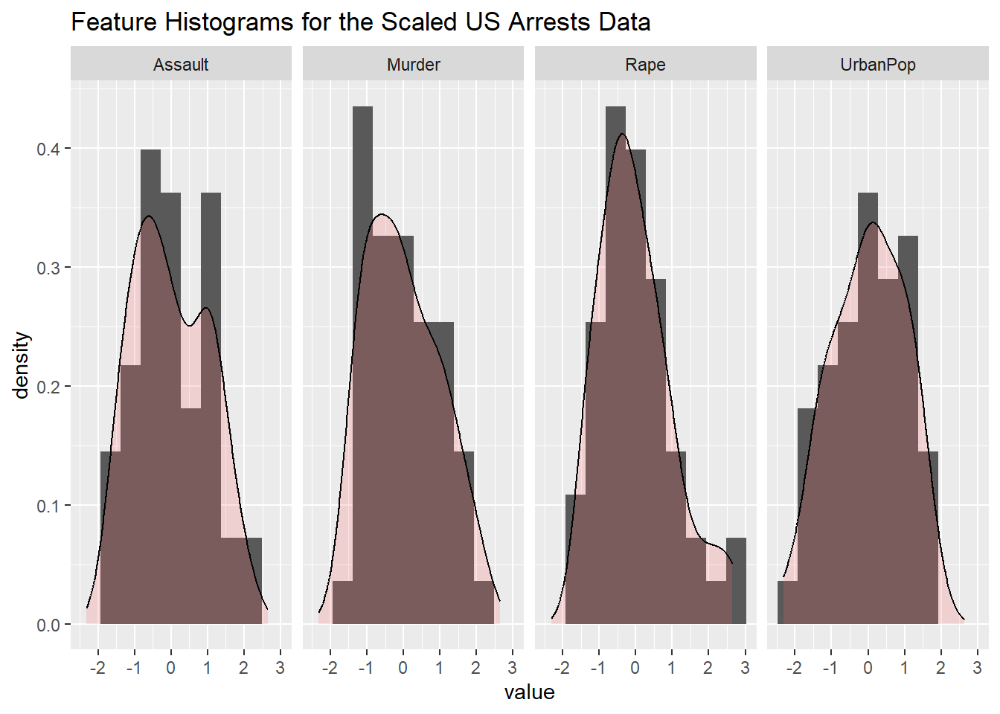
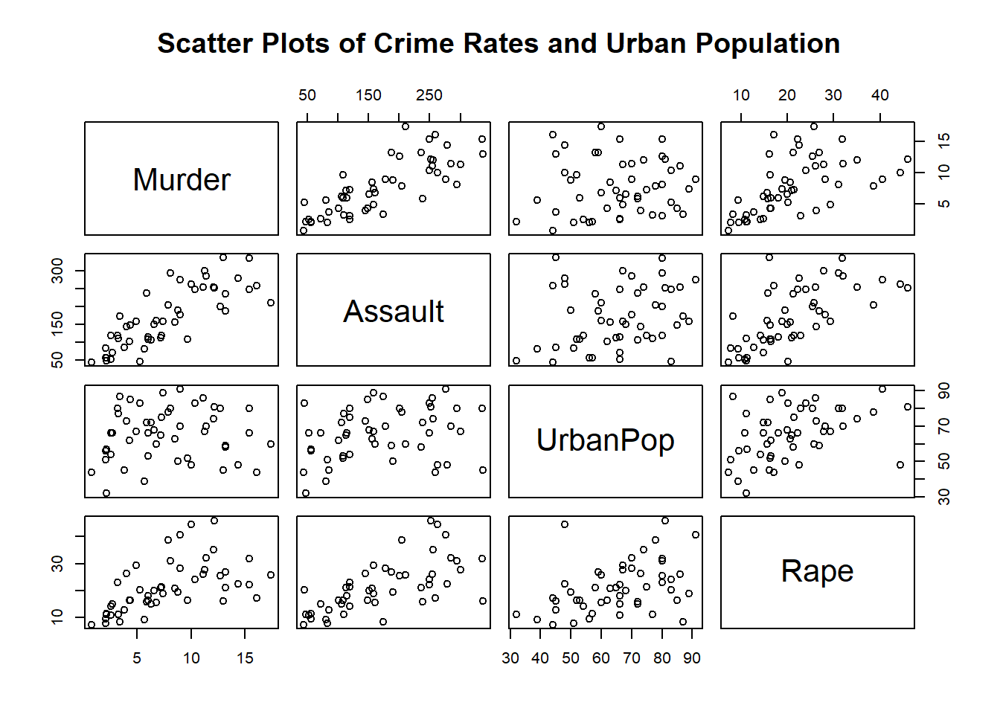

'data.frame': 50 obs. of 4 variables:
$ Murder : num 13.2 10 8.1 8.8 9 7.9 3.3 5.9 15.4 17.4 ...
$ Assault : int 236 263 294 190 276 204 110 238 335 211 ...
$ UrbanPop: int 58 48 80 50 91 78 77 72 80 60 ...
$ Rape : num 21.2 44.5 31 19.5 40.6 38.7 11.1 15.8 31.9 25.8 ...
NULLProblem Set 1 | 
The purpose of this document is to simulataneously analyze data on US crime rates and become more familiar with the syntax and abilities of R-markdown to combine code and analysis in a progressional document. Blockquotes look better in HTML typically, but you can see their general effect in any document. The text is highlighted differently in RStudio so you know its part of the block quote. Also, the margins of the text in the final document are narrower to separate the block quote from normal text.
The Structure of the Data
This data set contains statistics, in arrests per 100,000 residents for assault, murder, and rape in each of the 50 US states in 1973. Also given is the percent of the population living in urban areas.This is a data frame with 50 observations with 4 variables. As an additional variable, urban population is also accounted for. Urban population is represented by a percent of the population.
The data set has 50 observations with four columns. These columns a Murder, Assault,UrbanPop, and Rape. The Murder variable is a numeric data type, as is the Rape variable. The Assault and UrbanPop variables and integers.
Summary of Features
| Murder | Assault | UrbanPop | Rape | |
|---|---|---|---|---|
| Min. : 0.800 | Min. : 45.0 | Min. :32.00 | Min. : 7.30 | |
| 1st Qu.: 4.075 | 1st Qu.:109.0 | 1st Qu.:54.50 | 1st Qu.:15.07 | |
| Median : 7.250 | Median :159.0 | Median :66.00 | Median :20.10 | |
| Mean : 7.788 | Mean :170.8 | Mean :65.54 | Mean :21.23 | |
| 3rd Qu.:11.250 | 3rd Qu.:249.0 | 3rd Qu.:77.75 | 3rd Qu.:26.18 | |
| Max. :17.400 | Max. :337.0 | Max. :91.00 | Max. :46.00 |
Across all 50 states the mean of the Murder variable is 7.79 arrests for murder per 100,000 people. While the mean of Assault is 170.8 arrests per 100,000 people. The mean of Rape is 21.23 arrests per 100,000 people. While the mean of UrbanPop is 65.54 per 100,000 people.
# Make sure that this code block shows up in the final document
# and that the resulting plot does also.
library(ggplot2)
library(tidyr)
scaled_data = as.data.frame(sapply(USArrests, scale))
ggplot(gather(scaled_data, cols, value), aes(x = value)) +
geom_histogram(aes(y=..density..), bins = 10) +
geom_density(alpha=.2, fill="#FF6666") +
facet_grid(.~cols) +
ggtitle("Feature Histograms for the Scaled US Arrests Data")
Murder is right-skewed. Assault is right-skewed. UrbanPop is approximately symmetric. Rape is right-skewed.
Relationships Between Features

There appears to be a positivly correlated relationship between Murder and Assault. The appears to also be a positivly correlated relationship between UrbanPop and the other three arrest variables Murder, Assault, and Rape.
| Variable | Mean |
|---|---|
| Murder | 7.788 |
| Assault | 170.76 |
| UrbanPop | 65.54 |
| Rape | 21.232 |
Machine Learning Questions
In this section, you will type your paragraph answers to the following questions presented below. Do your best to answer the questions after reading chapter 1 of the textbook and watching the assigned videos.
What are the 7 basic steps of machine learning?
- Data Collection
- Data Reprocessing
- Splitting the Data
- Model Selection
- Model Training
- Model Evaluation
- Model Deployment
In your own words, please explain the bias-variance tradeoff in supervised machine learning and make sure to include proper terminology.
The bias-variance trade-off: it refers to the balance that you need to strike between two sources of error when building a model: Bias: Bias is the error introduced by approximating a real-world problem, which may be complex, by a simplified model. High bias can lead to under fitting, where the model is too simple to capture the underlying patterns in the data. It results in poor performance on both the training and validation sets. Variance: Variance is the error introduced by the models sensitivity to small fluctuations or noise in the training data. High variance can lead to over fitting, where the model becomes too complex and fits the training data too closely. It performs well on the training data but poorly on the validation or test data. The goal in machine learning is to find a model that achieves a balance between bias and variance. This is because reducing bias often increases variance, and vice versa. The challenge is to select the right complexity of the model and fine-tune its parameters to minimize both bias and variance, resulting in a model that generalizes well to unseen data.
Explain, in your own words, why cross-validation is important and useful.
Cross-validation is essential machine because: Cross-validation provides a more robust estimate of a models performance compared to a single train-test split. It helps in assessing how well a model generalizes to different subsets of the data. Maximizing Data Utilization: By rotating through different subsets of the data as training and validation sets, cross-validation ensures that all available data is used for both training and evaluation, which is particularly important when the dataset is limited.